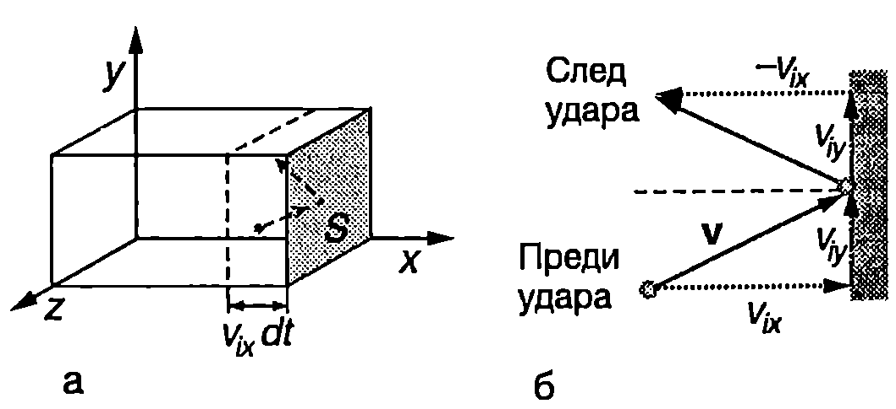
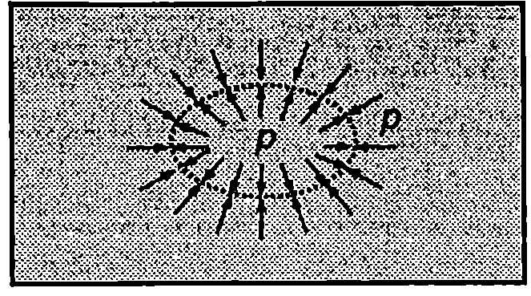

Идеален газ
Молекулите на газовете взаимодействат с консервативни молекулни сили на привличане и отблъскване, които по своята природа са електромагнитни сили. Когато молекулите са отдалечени една от друга, преобладават силите на привличане. На много малки разстояния силите на отблъскване рязко нарастват и молекулите за кратко време се оттласкват и отдалечават една от друга. Разстоянието между центровете на масите на две молекули, при което резултантната сила на взаимодействие от сила на привличане става сила на отблъскване, се приема за ефективен диаметър $d$ на молекулата. При нормални условия средното разстояние между молекулите е много по-голямо от техния диаметър, т.е. собственият обем на молекулите е много по-малък от обема, зает от газа. На такива големи разстояния междумолекулните сили почти не се проявяват. Те са съществени само когато молекулите се доближат на разстояние от порядъка на техния диаметър. През останалото време молекулите може да се разглеждат като невзаимодействащи частици. Най-простият модел, който описва движението и взаимодействието на молекулите на газовете, е моделът на идеалния газ. В този модел се правят съществено опростяващи задачата приближения:
-
Пренебрегва се собственият обем на молекулите.
-
Пренебрегва се потенциалната енергия на взаимодействие между молекулите. Смята се, че през по-голямата част от времето молекулите се движат праволинейно и равномерно и не взаимодействат помежду си. Те встъпват във взаимодействие само когато се доближат на много малко разстояние една от друга. Това взаимодействие се разглежда като еластичен удар, подобен на удара между две твърди тела в класическата механика. Времето на удара е много по-малко от средното време между два последователни удара. В резултат на удара молекулите рязко променят посоката и големината на скоростта си, след което отново се движат праволинейно и равномерно (до следващия удар).
Налягане на газа върху стените на съда
Идеален газ изпълва съд с форма на правоъгълен паралелепипед (Фиг. \ref{fig:32.1}а). Ще пресметнем налягането, което газът оказва върху стените на съда. Ще смятаме, че всички молекули на газа са еднакви. В даден момент от времето молекулите се движат с различни по големина и посока скорости. Ще ги разделим на групи в зависимост от големината на $x$-компонентата на скоростта им. Нека $N_i$ е броят на молекулите от $i$-тата група. $x$-компонентата на тяхната скорост е $v_{ix}$. Поради хаотичния характер на движението, за половината от тези молекули компонентата $v_{ix}$ е насочена по положителната посока на оста $x$, а за другата половина в противоположната посока. Да разгледаме молекула от $i$-тата група, която се отразява от дясната стена на съда (Фиг. \ref{fig:32.1}б). Ще смятаме удара в стената за абсолютно еластичен. Както е известно от механиката (вж. \ref{sec:13}), при абсолютно еластичен удар на частица в стена кинетичната енергия на частицата не се променя. Компонентата на скоростта на частицата, перпендикулярна на стената (в случая $x$-компонентата), само сменя посоката си на противоположната, докато успоредните на стената компоненти (в случая уи 2-компонентите) не се променят. Не се променят и $y$- и $z$-компонентите на импулса на молекулата. Преди удара $x$-компонентата на импулса на молекулата е $mv_{ix}$, а след удара става $-mv_{ix}$, където $m$ е масата на молекулата. Следователно в резултат на удара стената на съда получава от молекулата импулс

`Фиг. 32.1`
$$mv_{ix}-(-mv_{ix}) = 2mv_{ix}$$ За време $dt$ в дясната стена на съда ще се ударят половината от молекулите от $i$-тата група (тези, които се движат надясно), намиращи се в началния момент на разстояние не по-голямо от и от стената, т.е. в паралелепипеда с обем $S v_{ix} dt$, където $S$ е площта на стената (Фиг. \ref{fig:32.1}а). Техният брой е $\displaystyle dN_i = \frac{N_i}{2}\frac{S v_{ix}dt}{V}$, където $V$ е обемът на газа. В резултат на ударите за време от стената получава импулс $$
dp_i = (2mv_{ix})dN_i = \frac{mN_i v_{ix}^2 S dt}{V}.
$$
Съгласно с втория принцип на механиката молекулите от $i$-тата група действат на стената със сила $$
F_i = \frac{dp_i}{dt} = \frac{mN_i v_{ix}^2 S}{V}.
$$
Резултантната сила, с която действат върху стената всички молекули, е $$
F = \sum F_i = \frac{m S}{V} \sum N_i v_{ix}^2,
$$ където сумирането се извършва по всички групи, на които сме разделили молекулите. Силата F е насочена по оста $x$, т.е. перпендикулярно на стената на съда. Налягането р на газа по определение е равно на силата, с която той действа на единица площ от стените на съда $$
p = \frac{F}{S} = \frac{m}{V}\sum N_i v_{ix}^2.
$$
Сумата от квадратите на $x$-компонентите на скоростите на всички молекули, разделена на общия брой на молекулите на газа, се нарича средна стойност на квадрата на $x$-компонентата на скоростта $\overline{v_x^2}$. По определение $$
\overline{v_x^2} = \frac{\sum N_i v_{ix}^2}{N}.
$$
От уравнения \eqref{eq:32.4} и \eqref{eq:32.5} за налягането на газа се получава $$
p = \frac{N}{V} m\bar{v_x^2}.
$$
Чрез аналогични на \eqref{eq:32.5} равенства се дефинират средните стойности на квадратите на уи 2-компонентите на скоростта $\overline{v_y^2}$ и $\overline{v_z^2}$. Величината $$
\overline{v^2} = \overline{v_x^2} + \overline{v_y^2} + \overline{v_z^2}
$$ се нарича среден квадрат на скоростта на молекулите, а $\overline v_\text{кв.} = \sqrt{\overline {v^2}}$ средна квадратична скорост на молекулите. Тъй като не съществуват привилегировани направления на движение движението на молекулите е напълно хаотично и всички посоки на движение са еднакво вероятни, то
$$
\overline{v_x^2} = \overline{v_y^2} = \overline{v_z^2} = \frac{\overline{v^2}}{3}
$$
Заместваме $\overline{v_x^2}$ от уравнение \eqref{eq:32.8} в \eqref{eq:32.6} и получаваме $$
p = \frac{1}{3} \frac{N}{V} m \overline{v^2}.
$$
Уравнение \eqref{eq:32.4} изразява макроскопичната величина налягане $p$ на газа чрез микроскопичните величини им - скоростите на отделните молекули. В резултат на ударите отделните молекули непрекъснато променят скоростите си, но газът като цяло се характеризира с величината средна стойност на квадрата на скоростта $\overline{v_x^2}$, чиято стойност за дадено равновесно състояние на газа е точно определена и може да се пресметне от формула \eqref{eq:32.9}, след като експериментално се измери налягането ри се определи броят на молекулите в единица обем на газа $N/V$.
Вътрешно налягане

`Фиг. 32.2`
При извода на уравнение \eqref{eq:32.9} не отчетохме два фактора: ударите на молекулите в останалите стени на съда и ударите между самите молекулите. Очевидно първият фактор не оказва никакво влияние на получения резултат при удар в околните стени на паралепипеда (Фиг. \ref{fig:32.1}) $x$-компонентата на скоростта не се променя. В резултат на ударите помежду си молекулите непрекъснато променят големината и посоката на скоростта си, т.е. преминават от една група в друга група. Тъй като молекулите са еднакви, в случая няма значение кои точно молекули се намират в една или друга скоростна група. От значение е единствено средният брой на молекулите във всяка група. В състояние на равновесие средният брой на молекулите от всяка група не се променя с времето. Следователно след отчитане на удари те между молекулите трябва да се получи същият резултат \eqref{eq:32.9} за налягането на газа. Отчитането на ударите обаче води до една по-обща интерпретация на налягането на газа не само като налягане върху стените на съда, а и като мярка за силовото взаимодействие между два произволни макроскопични обема от газа, разделени с обща повърхност. Нека например мислено отделим някакъв обем $V$ от газа (Фиг. \ref{fig:32.2}). Повърхността $S$, която отделя обема от останалия газ, може да се разглежда като стена на съд, върху която газът от обема и оказва налягане $p$, чиято големина се определя от уравнение \eqref{eq:32.9}. Аналогични разсъждения могат да се направят за другата част от газа тя оказва същото налягане р върху външната страна на повърхността $S$. Следователно уравнение \eqref{eq:32.9} изразява не само налягането върху стените на съда, но и вътрешното налягане във всяка точка от обема на газа, т.е. величината рима същия смисъл, както налягането в механиката на флуидите.
Температура
Общият брой на молекулите на газа е $N = nN_A$, където $n$ е броят на моловете, а $N_A$ е числото на Авогадро. Заместваме $N$ в уравнение \eqref{eq:32.9} и получаваме $$
pV = \frac{2}{3} n N_A m \overline{v^2},
$$ където $\displaystyle \frac{m \overline{v^2}}{2}$ е средната кинетична енергия на постъпателно движение на една молекула от газа. От уравнение \eqref{eq:32.10} и от уравнението за състоянието на идеалния газ $pV = nRT$ изразяваме средната кинетична енергия на постъпателно движение на молекулите $$
\frac{m \overline{v^2}}{2} = \frac{3}{2} \frac{R}{N_A} T = \frac{3}{2}kT,
$$ където $$k = \frac{R}{N_A} = (1,!380\ 658 \pm0,!000\ 012).10^{-23}~\mathrm{\frac{J}{K}}$$
е една от фундаменталните физични константи, наречена в чест на австрийския физик Людвиг Болцман (1844-1906) константа на Болцман.
От уравнения \eqref{eq:32.11} и \eqref{eq:32.9} за налягането на идеалния газ се получава $$
p = \frac{N}{V} kT = n_V kT.
$$
Следователно налягането на газа е правопропорционално на броя на молекулите в единица обем $n_V = N/V$ и на абсолютната температура $T$ на газа. От друга страна, уравнение \eqref{eq:32.11} показва, че абсолютната температура $T$ на идеалния газ е правопропорционална на средната кинетична енергия на постъпателно движение на неговите молекули. Колкото по-голяма е енергията на хаотичното топлинно движение, толкова по висока е температурата. Следователно от гледна точка на молекулно-кинетичната теория температурата е мярка за интензивността на топлинното движение. При дадена температура молекулите на всички газове имат еднаква средна кинетична енергия на постъпателно движение. Средните квадратични скорости обаче са различни. От уравнение \eqref{eq:32.11} следва, че в газова смес, намираща се при определена температура, най-бързо се движат най-леките молекули, а най-бавно молекулите с най-голяма маса.
Съгласно с уравнение \eqref{eq:32.11} при приближаване на абсолютната нула средната кинетична енергия на молекулите също клони към нула. Ще подчертаем, че този извод е верен за идеалния газ. Реалните газове при охлаждане първо се втечняват, а след това течностите се втвърдяват. Според квантовата теория, при приближаване на абсолютната нула кинетичната енергия на молекулите в твърдите тела се стреми към някаква характерна за даденото вещество стойност, която е различна от нула.
Пример 32.1
Колко е средната квадратична скорост на молекулите на водорода (H$_2$) и на кислорода (O$_2$) във въздуха при стайна температура (300 К)? \end{psexample}
Решение
От уравнение \eqref{eq:32.11} изразяваме средната квадратична скорост на молекулите на идеален газ
$$\overline v_\text{кв.} = \sqrt{\overline {v^2}} = \sqrt{\frac{3kT}{m}}.$$
За водорода ($m = 3,!34.10^{-27}$ kg):
$$\overline v_\text{кв.} (\mathrm{H_2}) = \sqrt{\frac{3(1.38.10^{-23}\mathrm{J/K}) (300\mathrm{K})}{3,!34.10^{-27} kg}} = 1930~\mathrm{\frac{m}{s}}$$
Молекулите на кислорода имат 16 пъти по-голяма маса. Затова тяхната средна квадратична скорост е $\sqrt{16} = 4$ пъти по-малка $$v_\text{кв.}(\mathrm{O_2}) = \frac{v_\text{кв.}(\mathrm{H_2})}{4} \approx 480~\mathrm{\frac{m}{s}}.$$
Пример 32.2
Определете вътрешната енергия $n = 2$ mol хелий при температура $T = 300$ K. Разгледайте хелия като идеален газ, чийто молекули извършват само постъпателно движение. \end{psexample}
Решение
Вътрешната енергия $U$ на идеалния газ е равна на сумата от кинетичните енергии на всички молекули. Молекулите на хелия извършват само постъпателно движение, затова вътрешната му енергия е равна на средната кинетична енергия на постъпателно движение на една молекула $\displaystyle \frac{m \overline{v^2}}{2} = \frac{3}{2} kT$, умножена по броя на молекулите $N$ $$U = N(\frac{3}{2}kT)=\frac{3}{2}nN_AkT =\frac{3}{2}nRT,$$ където последователно сме отчели, че $N = n N_A$ и $N_A k = R$, където $R$ е универсалната газова константа. $$U= \frac{3}{2}(2 mol) (8,!3 Jmol.K) (300 K) = 7,!5 kJ.$$
Задачи
-
Идеален газ се нагрява при постоянен обем, при което средната кинетична енергия на постъпателно движение на молекулите му нараства 2 пъти. Как се е изменило налягането на газа?
-
Налягането на остатъчните газове във вакуумна камера с обем $V = 5.10^{-3}~\mathrm{m^3}$ e $p = 2.10^{-6}$ Pa. Колко е броят на газовите молекули в камерата, ако средната кинетична енергия на постъпателно движение на една молекула в $4.10^{-22}$ J?
-
Като използвате уравнение \eqref{eq:32.11}, покажете, че средната квадратична скорост на молекулите на идеален газ е равна на $$\overline v_\text{кв.} = \sqrt{\frac{3RT}{M}},$$ където $M$ е моларната маса на газа.
-
Температурата на повърхността на Слънцето е около 6000 К. От спектралните изследвания на слънчевата светлина е известно, че на повърхността на Слънцето се срещат повечето от елементите на периодичната система във вид на атомарни газове.
а) Колко джаула в средната кинетична енергия на постъпателно движение на атомите на тези газове?
- В какъв диапазон са средните квадратични скорости на постъпателно движение на атомите, като се започне от водорода ($M = 1$ g/mol) и се стигне до урана ($M = 238$ g/mol)?
-
При каква температура молекулите на хелия ($M(\mathrm{He}) = 0,!004$ kg/mol) имат същата средна квадратична скорост, както молекулите на водорода ($M(\mathrm{H_2}) = 0,!002$ kg/mol) при 27 °C? 6. Когато температурата на идеален газ нараснала с $\Delta T = 300$ К, средната квадратична скорост на молекулите му се увеличила 2 пъти. Колко келвина е била началната температура на газа?
-
Идеален газ, който се намира при налягане $p = 3.10^4$ Pa, има плътност $\rho = 1~\mathrm{kg/m^3}$. Колко метра в секунда в средната квадратична скорост на молекулите на газа?